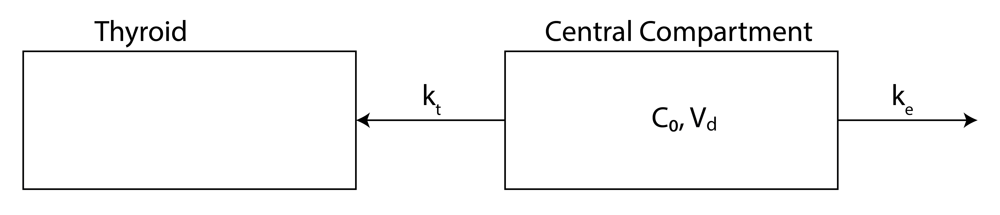

4.3.6. Iodine Metabolism#
The thyroid can take up and store iodine. I’m a graduate student working with radioactive Iodine-125. To determine if I’ve been accidentally exposed, after working with the material, I wait an adequate amount of time for the Iodine-125 to end up in my thyroid and then have my thyroid scanned for radioactivity. How long after working with Iodine-125 should I wait to have my thyroid scanned?
A compartmental model of what happens when radioactive iodine is accidentally ingested is shown below.

QUESTION: What processes are left out of the compartmental model? Why would I leave them out?
Our compartmental model assumes the following:
Once ingested, iodine moves quickly through the digestive system into the central compartment
The rate of iodine release from the thyroid is slow compared to the rates of excretion and transport to the thyroid
The volume of distribution is approximately constant.
The thyroid doesn’t absorb so much iodine that it becomes “full”
Before the ingestion, the thyroid was free of radioactive iodine.
4.3.6.1. Central Compartment#
The mass rate of change of Iodine-125 in the central compartment would be:
Solve as before to get \(\mathrm{c}(\mathrm{t})\), the concentration of iodine in the central compartment:
4.3.6.2. Thyroid Compartment#
If I is the amount of iodine stored in the thyroid, then:
Note that we have an equation for \(\mathrm{c}(\mathrm{t})\). Plugging it into the equation gives,
Integrating and solving for \(\mathrm{I}(\mathrm{t})\) gives,
We need boundary conditions to solve for A:
At \(t=0, I(t)=0\)
Which gives,
4.3.6.2.1. Modeling I(t)#
Let’s say I receive an initial dosage of 2.0 mCi of Iodine-125. How long after the accident should I wait before getting my thyroid checked for radioactive Iodine-125?
The initial concentration in my central compartment would be \(c_{0}=(2.0 \mathrm{mCi}) /(20 \mathrm{~L})\). The amount of Iodine-125 in my thyroid would be:
import numpy as np
import matplotlib.pyplot as plt
# Define the function for I(t)
def I_t(t, k_t, k_e, c_0):
return (k_t * c_0) / (k_e + k_t) * (1 - np.exp(-(k_t + k_e) * t))
# Parameters
k_t = 0.5 # transfer rate constant 1/hr
k_e = 0.1 # elimination rate constant 1/hr
c_0 = 2/20 # initial concentration
t = np.linspace(0, 10, 500) # time points from 0 to 10
# Calculate I(t)
I_values = I_t(t, k_t, k_e, c_0)
# Plot the graph
plt.plot(t, I_values, label=r'$I(t)=\frac{k_{t}c_{0}}{k_{e}+k_{t}}(1 - e^{-(k_{t}+k_{e}) t})$')
plt.axhline(y=c_0, color='r', linestyle='--', label=r'$c_0$') # Add a line at c_0
plt.xlabel('Time (hrs)')
plt.ylabel('I(t)')
plt.title('Drug Concentration vs. Time')
plt.legend()
plt.grid(True)
plt.show()
4.3.6.2.2. Elimination rate \(k_e\)#
# Different values of k_e to plot
k_e_values = [0.05, 0.1, 0.2, 0.4]
# Plot for each k_e
for k_e in k_e_values:
I_values = I_t(t, k_t, k_e, c_0)
plt.plot(t, I_values, label=f'$k_e = {k_e}$')
# Add the line for c_0
plt.axhline(y=c_0, color='r', linestyle='--', label=r'$c_0$')
# Plot formatting
plt.xlabel('Time (hrs)')
plt.ylabel('I(t)')
plt.title('Drug Concentration vs. Time for Different $k_e$')
plt.legend()
plt.grid(True)
plt.show()
4.3.6.2.3. Thyroid rate \(k_t\)#
k_e = 0.1 # elimination rate constant 1/hr
t = np.linspace(0, 20, 100) # time points from 0 to 10
# Different values of k_e to plot
k_t_values = [0.05, 0.1, 0.2, 0.4]
# Plot for each k_e
for k_t in k_t_values:
I_values = I_t(t, k_t, k_e, c_0)
plt.plot(t, I_values, label=f'$k_t = {k_t}$')
# Add the line for c_0
plt.axhline(y=c_0, color='r', linestyle='--', label=r'$c_0$')
# Plot formatting
plt.xlabel('Time (hrs)')
plt.ylabel('I(t)')
plt.title('Drug Concentration vs. Time for Different $k_t$')
plt.legend()
plt.grid(True)
plt.show()